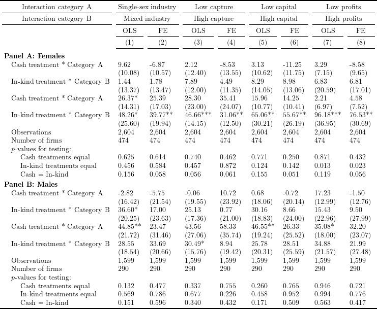

To read the created .tex file, the following \(\LaTeX\) packages are required:
# Install and load packages ---------------
packages <- c(
"tidyverse",
"haven",
"lfe",
"stargazer",
"broom",
"kableExtra",
"XML",
"magrittr"
)
pacman::p_load(packages, character.only = TRUE, install = TRUE)
# Load an example dataset ---------------
data <- read_dta("data/ReplicationDataGhanaJDE.dta")# function to create formula, which will be passed to lfe::felm
create_formula_table4 <- function(outcome, category, fe, iv, cluster) {
category <- paste0("(", paste(category, collapse = " + "), ")")
as.formula(
paste(
paste(outcome,
paste0("(atreatcash + atreatequip + factor(wave)):", category),
sep = " ~ "
),
fe, iv, cluster, sep = " | "
)
)
}
# function to run FE regressions with different category variables
felm_category <- function(category, fe, data, outcome, iv, cluster) {
df <- data %>%
rename(
category_A = category[1],
category_B = category[2]
)
felm(
create_formula_table4(outcome, c("category_A", "category_B"), fe, iv, cluster),
data = df
)
}
# function to create a panel of regression results
create_panel_table4 <- function(gender) {
outcome <- "realfinalprofit"
fe_1 <- "groupnum"
fe_2 <- "sheno"
iv <- "0"
cluster <- "sheno"
if (gender == "female") {
data_gender <- filter(data, female == 1)
category_1 <- c("female_female", "female_mixed")
} else if (gender == "male") {
data_gender <- filter(data, male == 1)
category_1 <- c("male_male", "male_mixed")
}
category_2 <- c("lowcapture", "highcapture")
category_3 <- c("lowcapital", "highcapital")
category_4 <- c("mlowgroup", "highgroup")
category_list <- list(
category_1, category_1,
category_2, category_2,
category_3, category_3,
category_4, category_4
)
# list of cuntions to conduct F-tests in each regression
test_fun_list <- replicate(3, vector(mode = "list", length = length(category_list)), FALSE)
for (i in seq_along(category_list)) {
test_fun_list[[1]][[i]] <- function(x) {
formatC(
waldtest(x, ~ `atreatcash:category_A` - `atreatcash:category_B`)["p.F"],
digits = 3, format = "f"
)
}
test_fun_list[[2]][[i]] <- function(x) {
formatC(
waldtest(x, ~ `atreatequip:category_A` - `atreatequip:category_B`)["p.F"],
digits = 3, format = "f"
)
}
test_fun_list[[3]][[i]] <- function(x) {
formatC(
waldtest(
x,
~ `atreatcash:category_A` - `atreatequip:category_A` |
`atreatcash:category_B` - `atreatequip:category_B`
)["p.F"],
digits = 3, format = "f"
)
}
}
# run regressions and get associated statistics
reg_res_table4 <- tibble(
category_list = category_list,
fe = rep(c(fe_1, fe_2), 4),
) %>%
mutate(
model = map2(
category_list, fe,
felm_category,
filter(data_gender, is.na(trimgroup)), outcome, iv, cluster
),
test_1 = map2_chr(model, test_fun_list[[1]], function(x, y) y(x)),
test_2 = map2_chr(model, test_fun_list[[2]], function(x, y) y(x)),
test_3 = map2_chr(model, test_fun_list[[3]], function(x, y) y(x)),
n_firm = map_int(model, function(x) n_distinct(model.frame(x)$sheno))
)
# create a panel of regression results
# and save as .html file
reg_res_table4 %>%
pull(model) %>%
stargazer(
dep.var.labels.include = FALSE,
column.labels = rep(c("OLS", "FE"), 4),
keep = c("atreat(cash|equip):category_(A|B)"),
covariate.labels = c(
"Cash treatment * Category A",
"In-kind treatment * Category B",
"Cash treatment * Category A",
"In-kind treatment * Category B"
),
title = "Table",
add.lines = list(
c("Number of firms", reg_res_table4$n_firm),
c("p-values for testing:", rep("", 8)),
c("\\ Cash treatments equal", reg_res_table4$test_1),
c("\\ In-kind treatments equal", reg_res_table4$test_2),
c("\\ Cash = In-kind", reg_res_table4$test_3)
),
type = "html",
out = paste0("html/FMQW2014_table4_replicate_", gender, ".html"),
omit.stat = c("rsq", "adj.rsq", "ser"),
table.layout = "=#c-t-sa-n",
digits = 2
)
}
create_panel_table4("female")
create_panel_table4("male")# read .html file as a table and remove irrelevant rows
table4_female <- readHTMLTable("html/FMQW2014_table4_replicate_female.html") %>%
.$Table %>%
drop_na() %>%
filter(!apply(., 1, function(x) all(x == ""))) %>%
slice(-c(1, 2)) %>%
as.matrix() %>%
set_colnames(NULL)
# add indentations
table4_female[(nrow(table4_female) - 2):nrow(table4_female),1] <- paste0(
"\\hspace{1em} ",
table4_female[(nrow(table4_female) - 2):nrow(table4_female),1]
)
table4_female[,1] <- str_replace(table4_female[,1], "p-values", "$p$-values")
# read .html file as a table and remove irrelevant rows
table4_male <- readHTMLTable("html/FMQW2014_table4_replicate_male.html") %>%
.$Table %>%
drop_na() %>%
filter(!apply(., 1, function(x) all(x == ""))) %>%
slice(-c(1, 2)) %>%
as.matrix() %>%
set_colnames(NULL)
# add indentations
table4_male[(nrow(table4_male) - 2):nrow(table4_male),1] <- paste0(
"\\hspace{1em} ",
table4_male[(nrow(table4_male) - 2):nrow(table4_male),1]
)
table4_male[,1] <- str_replace(table4_male[,1], "p-values", "$p$-values")
# combine two panels and make .tex file
rbind(table4_female, table4_male) %>%
kable("latex", booktabs = TRUE, escape = FALSE) %>%
kable_styling(latex_options = "scale_down") %>%
add_header_above(c(
"Interaction category B" = 1,
"Mixed industry" = 2,
"High capture" = 2,
"High capital" = 2,
"High profits" = 2
)) %>%
add_header_above(c(
"Interaction category A" = 1,
"Single-sex industry" = 2,
"Low capture" = 2,
"Low capital" = 2,
"Low profits" = 2
)) %>%
add_header_above(c(" ", rep(c("OLS", "FE"), 4))) %>%
add_header_above(c("", sapply(seq(8), function(x) paste0("(", x, ")")))) %>%
pack_rows(index = c(
"Panel A: Females" = nrow(table4_female), "Panel B: Males" = nrow(table4_male)
)) %>%
save_kable("tex/FMQW2014_table4_replicate.tex")